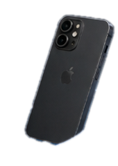
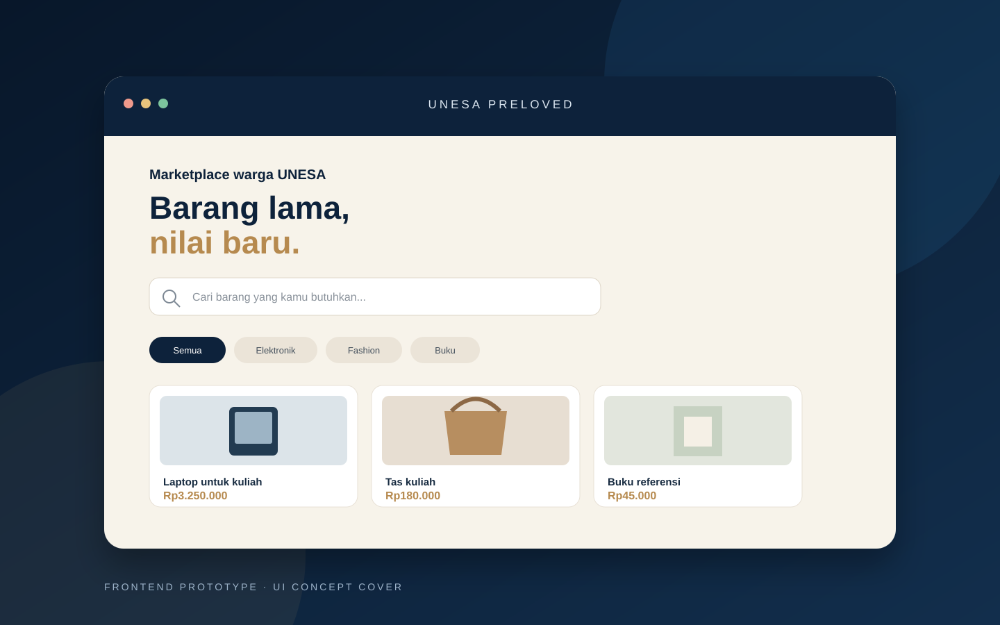

Understand
Learn the user's needs, business context, and the problem that needs to be solved.
I explore how digital systems, data, and thoughtful user experiences can solve practical problems for people and organizations.


A little about my approach
I am an Information Systems student at Universitas Negeri Surabaya. I am interested in how technology can improve the way businesses and organizations work. I enjoy learning how to understand user needs, map existing processes, and turn those needs into practical digital solutions.
My current learning journey focuses on web development, database fundamentals, and business system analysis. I am also exploring digital transformation, artificial intelligence, and cybersecurity as areas for future growth.
How I approach a challenge
Learn the user's needs, business context, and the problem that needs to be solved.
Review the current process, identify gaps, and translate findings into system requirements.
Explore a suitable solution through interface design, data structure, and application development.
Check whether the solution works as intended and communicate its limitations clearly.
Projects & experiments
A selection of projects that show how I explore business needs, interface design, and software systems. Each project is labelled according to its actual development status.
 SAAS · OPERATIONS
SAAS · OPERATIONS
A coffee-shop operations platform concept for managing inventory, stock movements, waste, sales, staff, and outlet activity in one workspace.
Production readiness has not been verified. Backend release gates remain open.

MARKETPLACE · FRONTENDA campus-focused preloved marketplace frontend concept designed around product discovery, student-oriented categories, and listing interfaces.
Static frontend prototype. Authentication, transactions, and persistent backend data are not implemented.
This portfolio only presents work supported by the project files currently available. New projects will be added after their implementation and status can be verified.
Tools I currently work with
These are the tools and skills I have identified in my current learning and project work. My focus areas are interests I am continuing to develop, not claims of professional specialization.
Indonesian — Native English — Basic
Work experience
Mie Ayam dan Bakso Gemilang Bibis Tama · Surabaya
Open to learning and collaboration
I am open to part-time internship opportunities, project collaboration, and conversations about practical technology solutions.
Surabaya, East Java, Indonesia